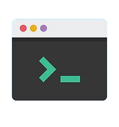

| #1. Basic Difference and History | ||
|
Windows
Windows was first released in 1985. It was supposed to be graphical user interface on top of MS DOS. All
features of MS DOS were later integrated in Windows 95 release. It was a huge success in and led to Windows transition.
|
Mac
This operating system from Apple stands older than Windows. It was first released in 1984. It began as a graphical
user interface right from its inception. In 2005 the design and structure of MAC OS was changed to IntelX86 based architecture.
|
Linux
Linux It was initially developed in Finnish University. It was released in 1991 and designed for GNU developers. GNU developers
later integrated it into Linux. It is open to consumers and everyone can use as per their specifications.
|
| #2. File Structure | ||
|
Windows
Windows follows a directory structure to store the different kinds of files of the user. It has logical drives and cabinet drawers.
It also has folders. Some common folders like documents, pictures, music, videos and downloads. All these files can be stored
in these folders and also new folders can be created. It also has files which can be a spreadsheet or any application program.
It can have extensions as .txt, .jpg etc.In addition to this Windows also provides recycle bin where all deleted files can be
stored. Recycle bin can be configured to increase its size.
|
Mac
The file structure of MAC is commonly known as MAC OS X. If you go to dig into your MAC's hard disk through finder you will
see many directories. The root directory of MAC may encounter when they visit their own MAC book. You can explore the file
system and directory structure by going to directories like Application, Developer, /sbin, /tmp, etc.
|
Linux
Has a completely different file structure form Windows and MAC. It was developed with a different code base. It stores
data in the form of tree. There is a single file tree and all your drives are mounted over this tree.
|
| #3. Registry | ||
|
Windows
Windows registry is a master database which is used to store all settings on your computer.
It is responsible to store all user information with its passwords and device relate information.
The registry also has an editor which allows you to view all keys and values or even drivers if necessary
|
Mac
MAC stores all application settings in a series of .plist files which have the various preferences folder in MAC.
This .plist file contains all properties in either plain text or binary format. These are stored at:/Library/Preferences folder.
|
Linux
Linux also does not have a specific registry of its own. All application setting are stored on program basis under
the different users in the same hierarchy format of the files being stored. There is not centralized database for
storing these details and so periodic cleaning is also not required.
|
| #4. Interchangeable Interface | ||
|
Windows
Windows interface was not interchangeable until Windows 8. Windows XP had some improvements but not par.
Start menu, task bar, system tray and Windows explorer.
|
Mac
MAC has facility to bridge virtual network interfaces. This can be done by going to system
preferences and managing the interfaces.
|
Linux
Linux is easy to switch interfaces. You can switch the environment without having to
carry all installations. There are utilities like GNOME and KDE which help in catering
these needs. They help in focusing on different aspects.
|
| #5. Command Terminal | ||
|
Windows

A terminal or command prompt is a black box ideally used to execute commands.
It is also called Windows Command Processor. It is used to execute commands
and different batch files. It can also be used for administrative functions
and trouble shoot and solve all windows issues.
|
Mac
MAC provides a console as a terminal application. It has console, command line,
prompt and terminal. Command line is used to type your commands. Prompt will provide
you some information and also enable you to run commands. Terminal is the actual
interface which will provide the modern graphical user interface as well. You can
find terminal at: Applications -> Utilities.
|
Linux
Linux also provides a terminal. You can find terminal at: Applications -> System or Applications - > Utilities. In addition to this there is also shell prompt. The most common shell used in bash. It defines how the terminal will behave and look when it is run.
|